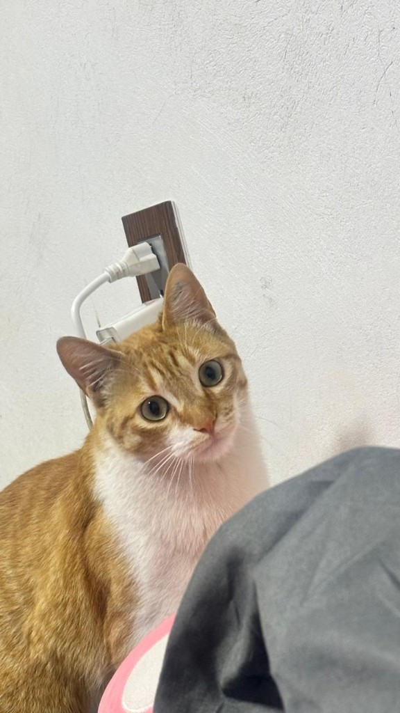

Se busca
Quesito
Soy un gatito naranja con blanco. Me escapé de casa el jueves 15 de octubre en la calle Caléndula, entre Del Valle y Ginko Biloba.
- Naranja con pecho, panza y patas blancas
- Tatuaje en la oreja, marca de esterilización
- Ojos verdes
- Soy amigable con los humanos, pero otros animales me asustan
Enlace copiado. Ya puedes pegarlo en un chat.

Importante si lo tienes
Necesita alimento médico
Tengo una enfermedad renal crónica. Requiero una alimentación médica especial y revisiones veterinarias constantes. Si me encontraste, no me des comida de gato común y avisa de inmediato.
Para reconocerlo
Toca una foto para verla más grande.
Dónde se perdió
Calle Caléndula
Entre Del Valle y Ginko Biloba. Si lo viste por ahí, o lo tienes resguardado, escribe a cualquier hora.
- Nombre
- Quesito
- Desapareció
- Jueves 15 de octubre de 2026
- Señas
- Naranja con blanco y tatuaje en la oreja
- 55 3531 8808
Ayuda a que vuelva a casa
Se agradecerá sinceramente a quien ayude a que Quesito regrese a salvo con su familia.
55 3531 8808WhatsApp y llamadas, a cualquier hora.